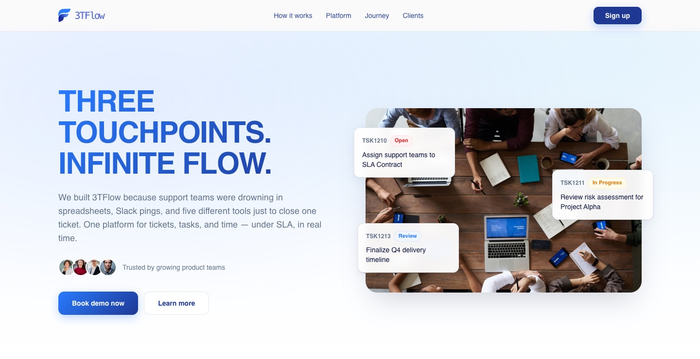

3TFlow
Enterprise product design for an IT service management (ITSM) platform: the workflows, roles and relationships that help support teams manage tickets and service operations.
- End-to-end flows across 2000+ ITSM screens for 5 user roles
- Ticket assignment cut from 6 steps to 3
- A Reports module and SLA tracking
- A design system of 4000+ components

The live product's public landing page. Screens from inside the product stay under the NDA.
This work is under a non-disclosure agreement, so the full case study is parked for now. I'm happy to walk you through the process, the decisions and what I can share in a call.